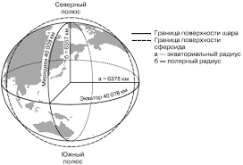

Откройте для себя мир океанов и их глубин
Узнайте о самых глубоких местах океанов и их уникальных характеристиках
Мифы и факты о подводном мире
Океаны — это огромные водные пространства, покрывающие большую часть Земли. Они являются домом для множества экосистем и странных существ, которые населяют подводные миры на невероятных глубинах.

Океаны могут достигать невероятных глубин. Самая глубокая точка на планете находится в Марианской впадине, глубина которой составляет около 10,9 километров.
Глубина: 10 994 метра.
Это самая глубокая точка мирового океана, которая поглощает свет и создаёт необычные условия для жизни морских обитателей.
.jpeg)
Океаны не имеют строго определённого диаметра, так как они представляют собой бескрайние водные просторы. Тем не менее, можно оценить диаметр Земли с учётом водного слоя.
Диаметр Земли — 12 742 км. Водные массы, покрывающие Землю, составляют около 71% её поверхности, что делает планету уникальной среди других планет.
Океаны содержат множество уникальных экосистем, таких как коралловые рифы, глубоководные пещеры и ещё неизведанные регионы, которые поддерживают жизнь многих существ, от микроскопических организмов до гигантских китов.
.jpeg)